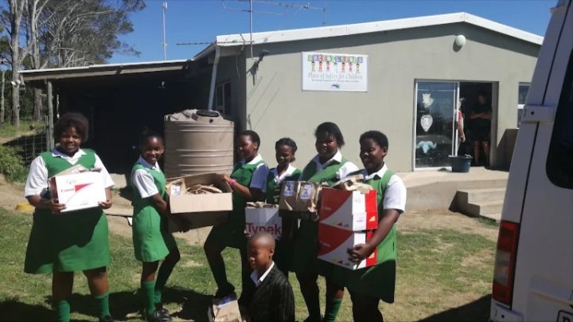
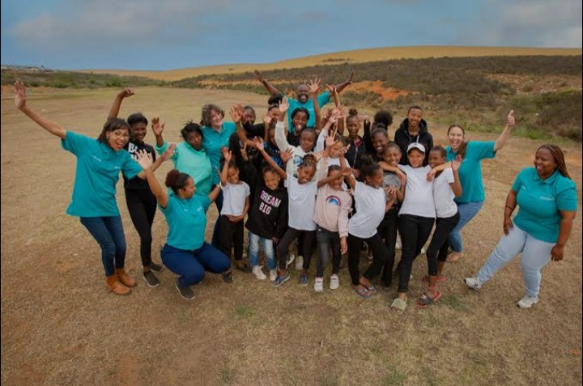

About Greensleeves Children's Trust

Our History
Greensleeves Children's Trust was started in the mid-1990s by Di Lehy and Sylvia after they encountered a struggling local family in desperate need of support. What began as a simple act of kindness helping one family grew into a dedicated cluster of foster homes.
The founders converted a single farm stable into a safe haven for children, and over the years, the organisation expanded into a fully-fledged foster village that now serves as a model for alternative child care in South Africa.
Today, the trust operates multiple foster homes in Brakfontein, outside East London, providing a stable, family-style environment for over 75 vulnerable children.

Our Mission
To provide a safe, loving and nurturing home environment for vulnerable, abandoned and orphaned children, equipping them with the education, life skills and emotional support they need to become self-sufficient and successful adults.
Our Vision
A South Africa where no child grows up without the love, care and opportunities they deserve, and where every child has access to education, stability and a hopeful future.
Our Core Values (Interactive)
Every child deserves to feel loved and valued.
We provide a family-style setting rather than an institutional one.
We believe education is the key to breaking the cycle of poverty.
We equip children with life skills to become self-sufficient adults.
Our Team
Our dedicated team consists of house parents, educators, social workers and support staff who work tirelessly to ensure every child receives the care and attention they deserve.
| Name | Role | Experience |
|---|---|---|
| Di Lehy | Co-Founder | Over 25 years in child care |
| Sylvia | Co-Founder | Over 25 years in social work |
| Mrs. Ndlovu | Head of Education | 15 years in teaching |
| Mr. Jansen | Programmes Coordinator | 10 years in youth development |